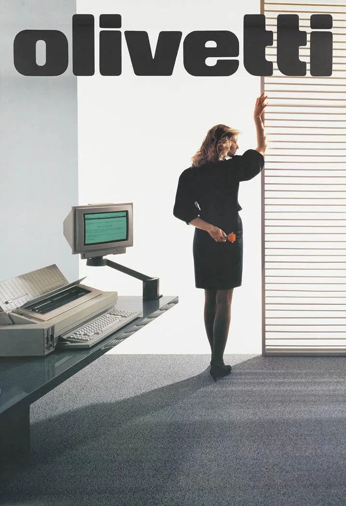
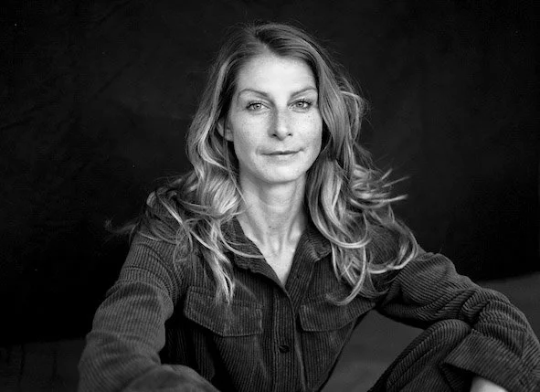
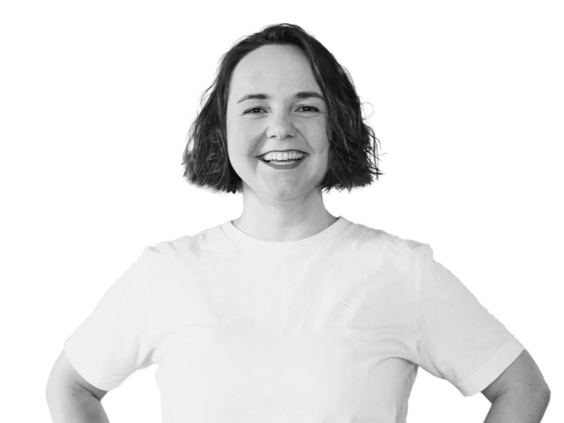

6 × 90 Minuten6 × 90 minutes
Ideal zum Reinschnuppern oder für ein konkretes Thema, auf das wir uns in sechs Sitzungen fokussieren.Ideal to try coaching or for one specific topic we focus on across six sessions.
1.350 EUREUR 1,350zzgl. MwSt.+ VATTHE GOOD CHANGECoaching
Ob beruflicher Wandel oder eigenes Business: Im Coaching mit Lisa Jikeli gewinnst Du Klarheit und Selbstvertrauen für die Entscheidungen, die jetzt anstehen. Persönliche und berufliche Entwicklung gehören dabei zusammen. Whether it's a career change or your own business: coaching with Lisa Jikeli gives you clarity and confidence for the decisions ahead. Personal and professional development belong together.

01 · Career Coaching
Für mehr Klarheit und Selbstvertrauen bei der Frage, welcher Job, welche Aufgaben und welches Umfeld wirklich zu Dir passen.For clarity and confidence on which job, tasks and setting truly fit you.
Was wir gemeinsam tunWhat we'll do
PaketePackages
Ideal zum Reinschnuppern oder für ein konkretes Thema, auf das wir uns in sechs Sitzungen fokussieren.Ideal to try coaching or for one specific topic we focus on across six sessions.
1.350 EUREUR 1,350zzgl. MwSt.+ VATMehr Tiefe für persönliche und berufliche Entwicklung, passend bei komplexeren Zielen. Mit extra Zeit und Begleitung.More depth for personal and professional development, suited to more complex goals. With extra time and support.
2.250 EUREUR 2,250zzgl. MwSt.+ VATRatenzahlung auf Anfrage. Uns ist wichtig, dass unsere Arbeit zugänglich ist. Der Einstieg ist ein kostenloser Connection Call.Payment plans on request. We want our work to be accessible. It all starts with a free connection call.
InklusiveIncluded

02 · Business Mentoring
Für Klarheit und Selbstvertrauen bei den ersten oder nächsten Schritten in Deinem werteorientierten, wirkungsvollen Business.For clarity and confidence on the first or next steps in your values-led, impact-driven business.
Was wir gemeinsam tunWhat we'll do
PaketePackages
Ideal zum Reinschnuppern oder für ein konkretes Thema, auf das wir uns in sechs Sitzungen fokussieren.Ideal to try mentoring or for one specific topic we focus on across six sessions.
1.350 EUREUR 1,350zzgl. MwSt.+ VATMehr Tiefe für persönliche und berufliche Entwicklung, passend bei komplexeren Zielen. Mit extra Zeit und Begleitung.More depth for personal and professional development, suited to more complex goals. With extra time and support.
2.250 EUREUR 2,250zzgl. MwSt.+ VATRatenzahlung auf Anfrage. Inklusive: 6 oder 10 Sitzungen, Übungen und Arbeitsblätter auf Wunsch, zertifizierte Coaching-Methoden und Achtsamkeitsübungen.Payment plans on request. Included: 6 or 10 sessions, exercises and worksheets if wanted, certified coaching methods and mindfulness exercises.

Feedback
Strategisch und achtsam, warm und klar: Lisa hat sie zu einer Karriereentscheidung begleitet und ihr viel Selbstvertrauen mitgegeben.Strategic and mindful, warm and clear: Lisa guided her to a career decision and gave her lots of confidence.
Von den Werten über die Produkte bis zur Content-Strategie hat sie ihr Business mit Lisa in der richtigen Reihenfolge aufgebaut.From values to products to content strategy, she built her business with Lisa in the right order.
Lisa macht komplexe Themen verständlich. Mit ihrer Wärme und Ermutigung fühlt man sich gesehen und unterstützt.Lisa makes complex topics easy to grasp. Her warmth and encouragement make you feel seen and supported.
Vorher wusste sie nicht, wohin. Das Coaching hat ihr geholfen, wieder bei sich anzukommen und ihren beruflichen Weg zu starten.Before, she didn't know where to go. The coaching helped her reconnect with herself and set off on her professional path.
Mit Lisas Unterstützung fühlt sie sich ermutigt, ihren Weg zu gehen und ihre Einzigartigkeit zu feiern.With Lisa's support she feels encouraged to follow her path and celebrate what makes her unique.
Sinngemäß zusammengefasst. Die vollständigen Stimmen stehen auf thegoodchange.co.Summarised. The full testimonials are on thegoodchange.co.
FAQ
Noch etwas offen? Schreib uns einfach.Anything else? Just get in touch.
Zum KontaktContact usCareer Coaching ist für Menschen, die sich beruflich verändern oder herausfinden wollen, was sie wirklich arbeiten möchten. Business Mentoring ist für (angehende) Gründende. Es verbindet systemisches Coaching mit Unternehmensberatung und legt den Fokus auf die Geschäftsentwicklung.Career coaching is for people who want to change careers or find out what they really want to do for work. Business mentoring is for (aspiring) founders. It combines systemic coaching with business consulting and focuses on business development.
Change Management, Unternehmensberatung, Projektmanagement, Marketingstrategie sowie Personal und Employer Branding. Mehr über Lisa und ihre Erfahrung steht auf der About-Seite.Change management, business consulting, project management, marketing strategy, and personal and employer branding. You can learn more about Lisa and her experience on the About page.
Wir haben über 100 Frauen durch Veränderungen begleitet. Als intersektional feministisches Unternehmen unterstützen wir besonders gern Menschen, die oft ausgeschlossen werden, etwa Frauen, LGBTQ+, Menschen mit Behinderung und People of Colour. Für die GOOD CHANGE braucht es aber alle. Deshalb begleiten wir gern jede Person, die sich für mehr Vielfalt, Gerechtigkeit und Inklusion einsetzt.We have supported more than 100 women through change. As an intersectional feminist business, we are especially keen to support people who are often excluded, such as women, LGBTQ+ folk, disabled people and people of colour. But the GOOD CHANGE needs everyone on board, so we happily support anyone committed to more diversity, equity and inclusion.
Passen wir zusammen?Are we a good fit?
Der erste Schritt ist ein kostenloser Connection Call: 30 Minuten, um uns kennenzulernen und herauszufinden, wie THE GOOD CHANGE Dich oder Euer Team am besten unterstützen kann. The first step is a free connection call: 30 minutes to get to know each other and find out how THE GOOD CHANGE can best support you or your team.
Oder direkt:Or directly: hello@thegoodchange.co